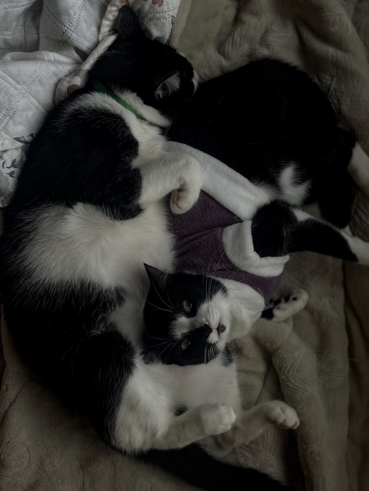
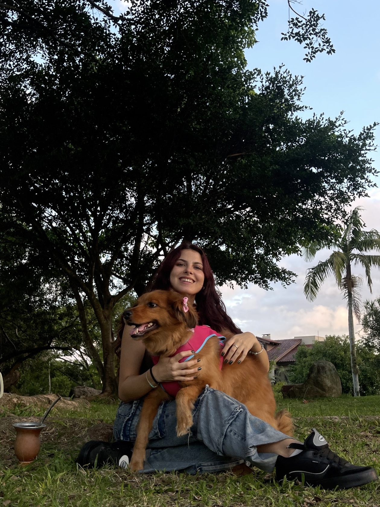

Compromissos tranquilos pra você, rotina sem estresse pra eles. Atendimento exclusivo em domicílio para todos os tipos de animais em Porto Alegre
O pet sitting é pensado como uma alternativa às creches e hotéis, mantendo seu pet no conforto de casa e evitando o estresse que eles sentem ao ter que mudar de ambiente ou precisar conviver com outros bichinhos. É um cuidado personalizado onde garanto que toda a atenção que seu pet merece e precisa será dada!
O que está incluso na visita:
✅ Alimentação, troca de água e higienização dos potes.
✅ Cuidados diários (remédios, alguma necessidade especial, etc).
✅ Muito carinho, brincadeiras e atenção!
✅ Limpeza do espaço do pet (caixinha de areia, tapetes higiênicos, terrário e qualquer sujeirinha ou "acidente" que ele fizer).
Atendo qualquer tipo de animal
Passeios seguros para gastar a energia do seu cão, respeitando seu ritmo, ajudando na redução do estresse e melhora na saúde física e bem-estar. Ideal para animais que tem dificuldade em fazer as necessidades dentro de casa, ou estão acostumados a essa rotina.
A rota e tempo da caminhada podem ser ajustadas conforme desejar.
Foco principal na Zona Norte de Porto Alegre (São João, Higienópolis, Passo D'areia, Boa vista e arredores). A realização dos serviços depende da análise da distância e disponibilidade na região solicitada. Entre em contato para tirar dúvidas!
Sou gaúcha, estudante de Farmácia, tenho 20 anos, participo de pesquisa acadêmica e sempre fui completamente apaixonada por animais. Já tive de tudo; coelho, cachorro, tartaruga, peixe, gato e até uma lagartixa... Hoje em dia a Flora, o Berlim e a Viena são meus fiéis companheiros. Sei o quanto é difícil encontrar alguém que passe a confiança em deixá-los sozinhos, e saber que está tudo bem. Foi por entender essa necessidade que comecei nesse ramo, meu maior objetivo é manter a paz de espírito dos tutores e do animalzinho, mantendo a rotina dele na sua ausência um pouquinho melhor, tendo sempre extremo respeito pela sua casa!
Não economizo em enviar fotos e vídeos do seu bichinho pra matar a saudade!


Ficou com alguma dúvida ou quer pedir um orçamento para o seu pet? Chame-me no WhatsApp, será um prazer atender e entender as suas necessidades!